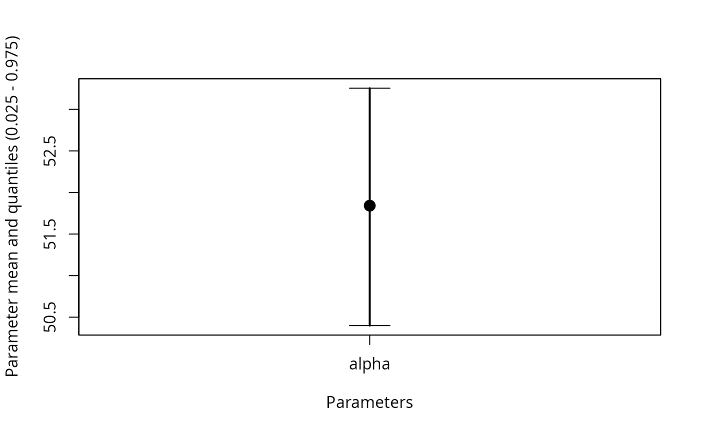
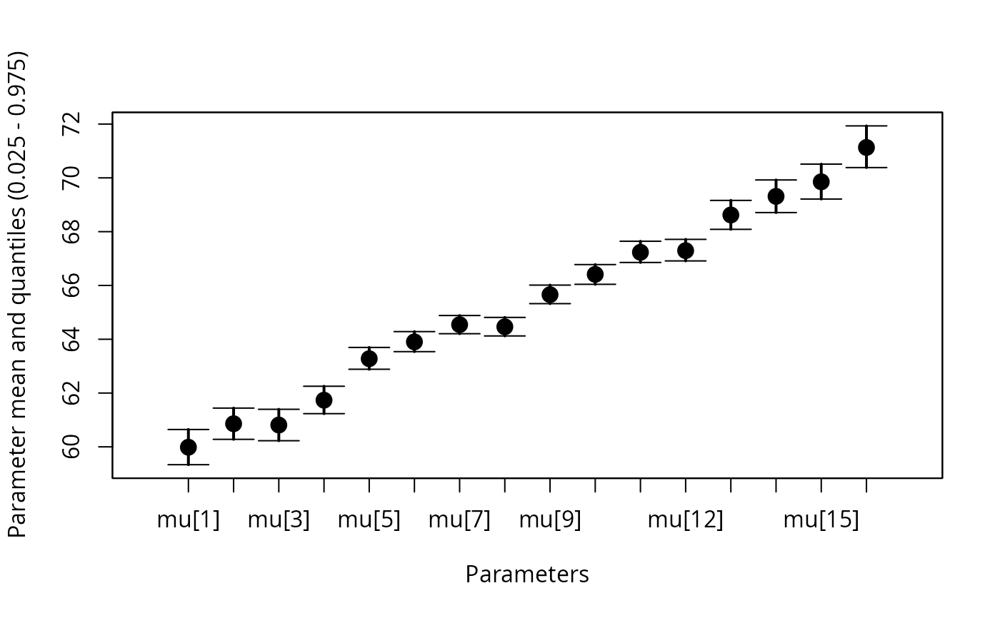
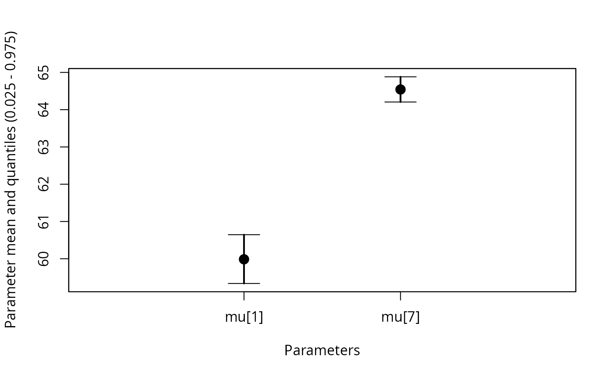

Whisker plots of parameter posterior distributions
whiskerplot.RdDisplays whisker plots for specified parameters on the same plot, with a point at the mean value for the posterior distribution and whiskers extending to the specified quantiles of the distribution.
whiskerplot(x, parameters, quantiles=c(0.025,0.975), zeroline=TRUE, ...)Arguments
- x
A jagsUI object
- parameters
A vector of names (as characters) of parameters to include in the plot. Parameter names must match parameters included in the model. Calling non-scalar parameters without subsetting (e.g.
alpha) will plot all values ofalpha.- quantiles
A vector with two values specifying the quantile values (lower and upper).
- zeroline
If TRUE, a horizontal line at zero is drawn on the plot.
- ...
Additional arguments passed to plot.default
Examples
#Analyze Longley economic data in JAGS
#Number employed as a function of GNP
#See ?jags for a more detailed example
#Get data
data(longley)
gnp <- longley$GNP
employed <- longley$Employed
n <- length(employed)
data <- list(gnp=gnp,employed=employed,n=n)
#Identify filepath of model file
modfile <- tempfile()
writeLines("
model{
#Likelihood
for (i in 1:n){
employed[i] ~ dnorm(mu[i], tau)
mu[i] <- alpha + beta*gnp[i]
}
#Priors
alpha ~ dnorm(0, 0.00001)
beta ~ dnorm(0, 0.00001)
sigma ~ dunif(0,1000)
tau <- pow(sigma,-2)
}
", con=modfile)
#Set parameters to monitor
params <- c('alpha','beta','sigma','mu')
#Run analysis
out <- jags(data = data,
inits = NULL,
parameters.to.save = params,
model.file = modfile,
n.chains = 3,
n.adapt = 100,
n.iter = 1000,
n.burnin = 500,
n.thin = 2)
#>
#> Processing function input.......
#>
#> Done.
#>
#> Compiling model graph
#> Resolving undeclared variables
#> Allocating nodes
#> Graph information:
#> Observed stochastic nodes: 16
#> Unobserved stochastic nodes: 3
#> Total graph size: 74
#>
#> Initializing model
#>
#> Adaptive phase, 100 iterations x 3 chains
#> If no progress bar appears JAGS has decided not to adapt
#>
#>
#> Burn-in phase, 500 iterations x 3 chains
#>
#>
#> Sampling from joint posterior, 500 iterations x 3 chains
#>
#>
#> Calculating statistics.......
#>
#> Done.
#Examine output summary
out
#> JAGS output for model '/tmp/RtmpWkPEqM/fileaa566bbbd634', generated by jagsUI.
#> Estimates based on 3 chains of 1000 iterations,
#> adaptation = 100 iterations (sufficient),
#> burn-in = 500 iterations and thin rate = 2,
#> yielding 750 total samples from the joint posterior.
#> MCMC ran for 0 minutes at time 2026-01-29 15:20:57.627967.
#>
#> mean sd 2.5% 50% 97.5% overlap0 f Rhat n.eff
#> alpha 51.841 0.753 50.399 51.825 53.254 FALSE 1 1.000 750
#> beta 0.035 0.002 0.031 0.035 0.039 FALSE 1 1.001 750
#> sigma 0.718 0.147 0.499 0.697 1.040 FALSE 1 0.999 750
#> mu[1] 59.985 0.333 59.336 59.976 60.645 FALSE 1 1.000 750
#> mu[2] 60.859 0.293 60.279 60.849 61.441 FALSE 1 1.000 750
#> mu[3] 60.812 0.295 60.227 60.801 61.396 FALSE 1 1.000 750
#> mu[4] 61.734 0.255 61.233 61.727 62.253 FALSE 1 1.000 750
#> mu[5] 63.277 0.201 62.885 63.275 63.696 FALSE 1 1.001 750
#> mu[6] 63.903 0.185 63.539 63.910 64.284 FALSE 1 1.001 750
#> mu[7] 64.542 0.175 64.206 64.546 64.882 FALSE 1 1.002 750
#> mu[8] 64.463 0.176 64.123 64.467 64.812 FALSE 1 1.001 750
#> mu[9] 65.658 0.174 65.324 65.660 66.013 FALSE 1 1.002 716
#> mu[10] 66.412 0.185 66.043 66.411 66.776 FALSE 1 1.003 693
#> mu[11] 67.232 0.207 66.854 67.229 67.643 FALSE 1 1.004 699
#> mu[12] 67.294 0.208 66.912 67.293 67.714 FALSE 1 1.004 700
#> mu[13] 68.621 0.257 68.086 68.626 69.162 FALSE 1 1.004 740
#> mu[14] 69.312 0.286 68.710 69.313 69.922 FALSE 1 1.004 750
#> mu[15] 69.854 0.311 69.213 69.856 70.511 FALSE 1 1.003 750
#> mu[16] 71.130 0.371 70.382 71.136 71.932 FALSE 1 1.003 750
#> deviance 33.138 2.788 30.069 32.472 40.458 FALSE 1 1.002 750
#>
#> Successful convergence based on Rhat values (all < 1.1).
#> Rhat is the potential scale reduction factor (at convergence, Rhat=1).
#> For each parameter, n.eff is a crude measure of effective sample size.
#>
#> overlap0 checks if 0 falls in the parameter's 95% credible interval.
#> f is the proportion of the posterior with the same sign as the mean;
#> i.e., our confidence that the parameter is positive or negative.
#>
#> DIC info: (pD = var(deviance)/2)
#> pD = 3.9 and DIC = 37.032
#> DIC is an estimate of expected predictive error (lower is better).
#Generate whisker plots
#Plot alpha
whiskerplot(out,parameters=c('alpha'))

#Plot all values of mu
whiskerplot(out,parameters='mu')

#Plot a subset of mu
whiskerplot(out,parameters=c('mu[1]','mu[7]'))

#Plot mu and alpha together
whiskerplot(out,parameters=c('mu','alpha'))